Linux 利用 ftrace 分析内核调用
[toc]
一、概述
在 Linux 中，ftrace 是一种用于跟踪内核函数调用和事件的工具。它是一个功能强大的跟踪框架，可用于分析和调试内核性能问题。
ftrace 提供了多种功能，包括函数跟踪、事件记录和性能分析等。它能够记录函数的调用和返回信息，以及函数执行的路径和时间。通过跟踪这些信息，我们可以了解到内核函数的执行情况，从而定位和解决性能问题。
ftrace 使用了内核中的一些机制来实现跟踪功能。其中一个关键的机制是函数预编译器，它会在每个内核函数的入口和出口处插入一些特殊的指令，用于记录函数的调用和返回信息。这些指令可以通过内核配置选项来启用或禁用。
此外，ftrace 还支持事件跟踪，可以记录系统中发生的各种事件，比如中断、系统调用、定时器事件等。通过分析这些事件的发生频率和顺序，可以帮助我们找出系统中的瓶颈和性能问题。
除了记录和分析跟踪信息外，ftrace 还提供了一些工具和接口，用于配置和控制跟踪功能。其中最常用的工具是 trace-cmd 和 trace-cmd-report，它们可以用来收集和分析跟踪数据。
二、ftrace 的使用
1、常用信息
ftrace 是一个自 Linux 2.6 版本起就支持的内核调试工具。最初，ftrace 主要用于函数级别的跟踪（function trace），但经过不断发展，ftrace现已成为一个通用的调试框架，能够实现多种跟踪目的。
ftrace通过 debugfs 虚拟文件系统向用户空间提供访问接口。通常，debugfs 会挂载在 /sys/kernel/debug 目录下，而 ftrace的控制和输出文件位于该目录下的 tracing子目录中，完整路径为 /sys/kernel/debug/tracing。所以要使用 ftrace，就要先进入到 sys/kernel/debug/tracing 目录中（仅对 root 用户可用）：
1 | |
这个目录下的内容如下：
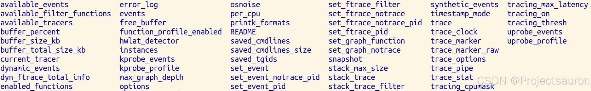
其中的核心文件介绍如下表：
| 文件 | 描述 |
|---|---|
| available_tracers | 可用跟踪器，hwlat blk function_graph wakeup_dl wakeup_rt wakeup function nop，nop 表示不使用跟踪器 |
| current_tracer | 当前使用的跟踪器 |
| function_profile_enabled | 启用函数性能分析器 |
| available_filter_functions | 可跟踪的完整函数列表 |
| set_ftrace_filter | 选择跟踪函数的列表，支持批量设置，例如 tcp、tcp 和 tcp 等 |
| set_ftrace_notrace | 设置不跟踪的函数列表 |
| set_event_pid | 设置跟踪的 PID，表示仅跟踪 PID 程序的函数或者其他跟踪 |
| tracing_on | 是否启用跟踪，1 启用跟踪；0 关闭跟踪 |
| trace_options | 设置跟踪的选项 |
| trace_stat（目录） | 函数性能分析的输出目录 |
| kprobe_events | 启用 kprobe 的配置 |
| uprobe_events | 启用 uprobe 的配置 |
| events ( 目录 ) | 事件（Event）跟踪器的控制文件： tracepoint、kprobe、uprobe |
| trace | 跟踪的输出 （Ring Buffer） |
| trace_pipe | 跟踪的输出；提供持续不断的数据流，适用于程序进行读取 |
更详细的信息查阅 ftrace 官方文档。
2、指定 ftrace 跟踪器
ftrace 支持多种追踪类型，包括函数调用、函数图、硬件延迟、中断关闭、抢占关闭等，我们可以用上一小节提到的 available_tracers 来查看可用的跟踪器：
1 | |
如下是其中一些特性的介绍：
- function ： 一个无需参数的函数调用跟踪程序
- function_graph ： 一个使用子调用的函数调用跟踪程序
- blk： 一个与块 I/O 跟踪相关的调用和事件跟踪程序（它是 blktrace 使用的）
- mmiotrace： 一个内存映射 I/O 操作跟踪程序
- nop ：最简单的跟踪程序，就像它的名字所暗示的那样，它不做任何事情
其中比较常用的是 function 和 function_graph。如要要设置跟踪器类型，需要把类型写入到 current_tracer 文件。比如设置类型为 function_graph 可以这样操作
1 | |
3、设置要跟踪的函数
set_ftrace_filter 表示要跟踪的函数，比如追踪 epoll_wait 可以这样操作：
1 | |
set_graph_function 用于设置 function_graph 跟踪器的触发函数。它不仅跟踪指定的函数，还跟踪该函数调用的所有子函数。
4、ftrace 的开关
ftrace 的开关是通过 tracing_on 文件来控制的。
1 | |
5、function 跟踪程序
先写一个脚本文件 trace.sh，再执行：
1 | |
脚本运行完成后，我们将看到下列的输出：
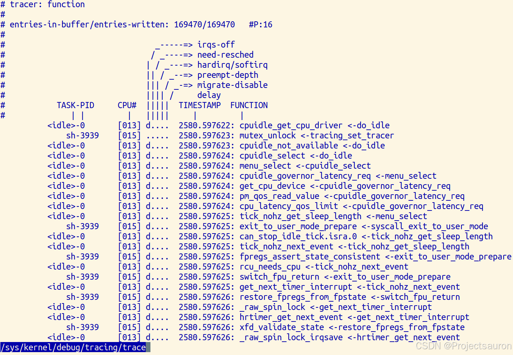
这个输出以“缓冲区中的信息条目数量”和“写入的全部条目数量”开始。这两者的数据差异是缓冲区中事件的丢失数量（在我们的示例中没有发生丢失）。
在这里有一个包含下列信息的函数列表：
- 进程标识符（PID）
- 运行这个进程的 CPU（CPU#）
- 进程的时间戳（TIMESTAMP）
- 被跟踪函数的名字以及调用它的父级函数；例如，在我们输出的第一行，rb_simple_write 调用了 mutex-unlock 函数。
6、function_graph 跟踪程序
function_graph 跟踪程序的工作和函数跟踪程序一样，但是它更详细：它显示了每个函数的进入和退出点。使用这个跟踪程序，我们可以跟踪函数的子调用并且测量每个函数的运行时间。
还是一样，先写一个脚本文件 trace.sh：
1 | |
运行这个脚本之后，我们将得到如下的输出：
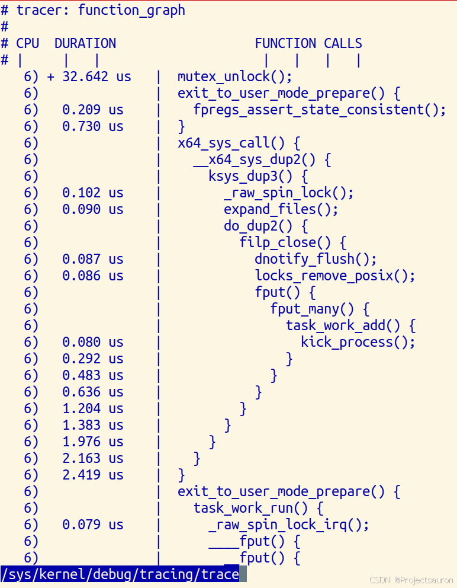
DURATION 展示了花费在每个运行的函数上的时间。注意使用 + 符号标记的地方。加号（+）意思是这个函数花费的时间超过 10 毫秒；而如果用感叹号（!）则表示是这个函数花费的时间超过了 100 毫秒。
在 FUNCTION_CALLS 下面，我们可以看到每个函数调用的信息。
和 C 语言一样使用了花括号 =={ }== 标记每个函数的边界，它展示了每个函数的开始和结束，一个用于开始，一个用于结束；不能调用其它任何函数的叶子函数用一个分号 ==;== 标记。
7、函数过滤器
ftrace 输出可能会很庞大，精确找出我们所需要的内容可能会非常困难。我们可以使用过滤器去简化我们的搜索：输出中将只显示与我们感兴趣的函数相关的信息。为实现过滤，我们只需要在 set_ftrace_filter 文件中写入我们需要过滤的函数的名字即可。例如：
1 | |
如果禁用过滤器，我们只需要在这个文件中添加一个空白行即可：
1 | |
而 *set_ftrace_notrace * 会得到和 set_ftrace_filter 相反的结果，例如：
1 | |
输出将包含除了 kfree() 以外的任何函数的信息。
另外还有 set_ftrace_pid。它是为在一个特定的进程运行期间调用跟踪函数准备的。
8、跟踪事件
在Linux中，跟踪点（tracepoints）是一种用于动态跟踪程序执行的机制。它是一种轻量级的调试技术，可以在不修改程序源代码的情况下监视系统和应用程序的执行过程。
跟踪点可以被视为在程序的不同位置放置的断点，当程序执行到这些位置时会触发相应的跟踪记录。这些跟踪记录可以提供有关程序行为的有用信息，如函数调用、系统调用、中断事件等。
Linux中的跟踪点分为两类：
- 内核跟踪点：这些跟踪点嵌入在Linux内核中，用于跟踪内核事件，如系统调用、中断、调度事件等。内核跟踪点是通过Linux动态跟踪（LTTng）和ftrace等工具提供的。
- 用户空间跟踪点：这些跟踪点是在用户空间应用程序中定义的，用于跟踪应用程序的执行过程。用户空间跟踪点是通过perf工具和SystemTap等工具提供的。
在 Linux 内核中为了从用户空间使用跟踪点，它有一个专门的 API。在 /sys/kernel/debug/tracing 目录中，这里有一个事件目录，它是为了保存系统事件。这些只是为了跟踪系统事件。在这个上下文中系统事件可以理解为包含在内核中的跟踪点。
可以通过运行如下的命令来查看这个事件列表：
1 | |
这个命令将在控制台中输出一个很长的列表。这样看起来很不方便。我们可以使用如下的命令来列出一个结构化的列表：
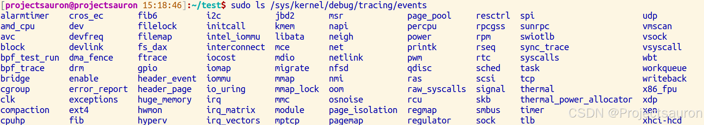
所有可能的事件都按子系统分组到子目录中。在我们开始跟踪事件之前，我们要先确保启用跟踪，也就是前面提到的 tracing_on 必须为 1。
所有事件相关的系统调用都保存在系统调用目录下。在这里我们将找到一个进入和退出各种系统调用的目录。我们需要在相关的文件中通过写入数字 1 来激活跟踪点：
1 | |
1 | |
这里直接使用 tracepoint 跟踪 sys_openat 系统调用，设置如下：
1 | |
我们通过设置 sys_enter_openat/enable 开启对于 sys_enter_openat 的跟踪，trace 文件中的跟踪记录格式与 sys_enter_openat/format 中的 print 章节的格式一致。
1 | |
结果如下：
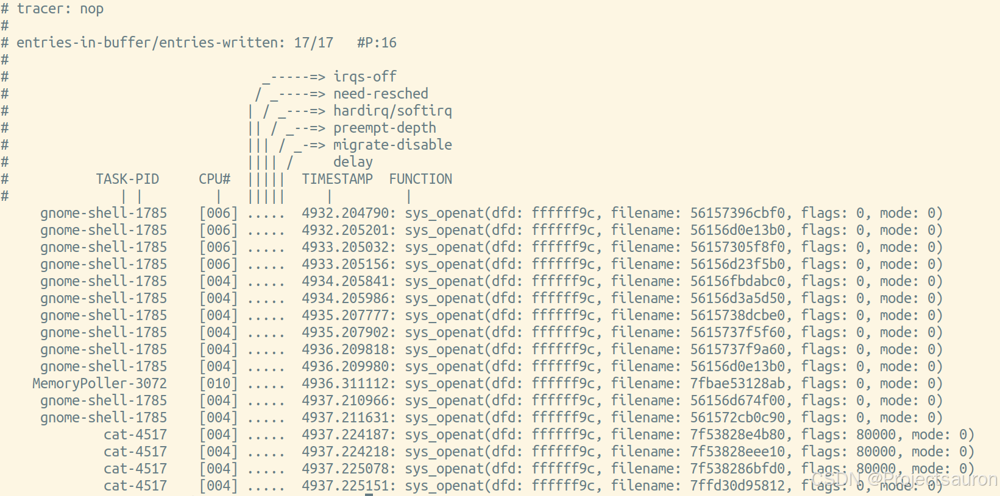
关于 sys_enter_openat/filter 文件为跟踪记录的过滤条件设置，格式如下：
1 | |
其中：
- field 为
sys_enter_openat/format中的字段。 - operator 为比较符
- 整数支持：==，!=，</、，<=，>= 和 & ，
- 字符串支持 ==，!=，~ 等，其中 ~ 支持 shell 脚本中通配符 *，？，[] 等操作。
- 不同的条件也支持 && 和 || 进行组合。
如需要通过 format 格式中的 mode 字段过滤：
1 | |
只需要将进行如下设置即可：
1 | |
如果需要清除 filter，直接设置为 0 即可：
1 | |
三、trace-cmd 的使用
从上面的例子看出使用 ftrace 还是挺麻烦的，真正使用时实际上使用 trace-cmd 更多一点。trace-cmd 是一个用户空间的命令行工具，用于与 ftrace 进行交互。它提供了一个更方便的接口来配置和使用 ftrace，避免了直接操作 debugfs 文件系统的麻烦。
1、常见命令
trace-cmd 的常见命令如下：
trace-cmdrecord：记录实时跟踪数据并将其写入trace.dat 文件trace-cmd report：读取 trace.dat 文件并将二进制数据转换为可读的 ASCII 文本格式。trace-cmd start：开始跟踪但不记录到 trace.dat 文件。trace-cmd stop：停止跟踪。trace-cmd extract：从内核缓冲区提取数据并创建 trace.dat 文件。trace-cmd reset：禁用所有跟踪并恢复系统性能。
下面使用 record 记录 trace 数据：
1 | |
注意 trace-cmd 默认开启了 funcgraph-proc 这个 trace-option，不需要手动指定。
使用 ctrl-c 退出这个 trace-cmd 时，会在当前目录生成 trace.dat文件。接下来使用 report 读取 trace.dat 生成可读的文本：
1 | |
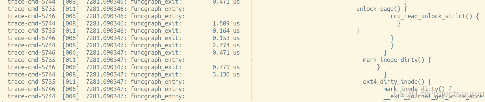
2、常用选项
2.1 列出可用的追踪器
当使用 ftrace 时，你必须查看文件的内容以了解有哪些追踪器可用。但使用 trace-cmd，你可以通过以下方式获得这些信息：
1 | |
它还可以带一个可选的参数，使用正则表达式进行过滤：
1 | |
2.2 跟踪特定进程的函数调用
如果只想跟踪特定进程的函数调用，可以使用 -P 选项指定进程的 PID。例如，要跟踪用户进程 PID 为 1656 的进程，可以使用以下命令：
1 | |
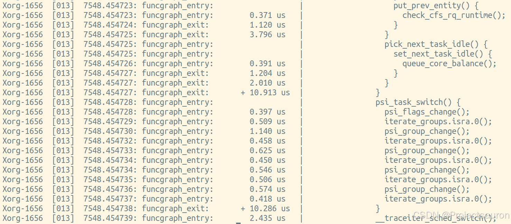
2.3 函数过滤
-g 选项用于 function_graph 插件，-g do_sys_open 表示只跟踪 do_sys_open 函数及其调用的所有子函数。
1 | |
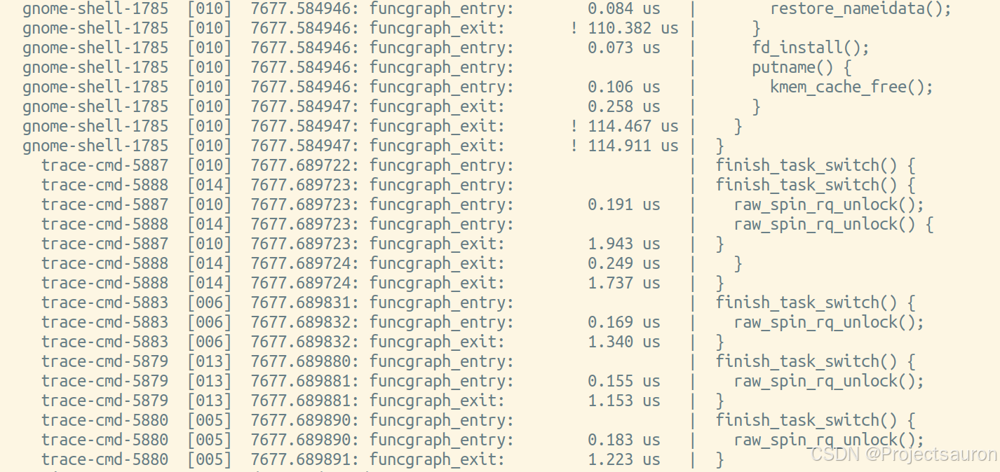
-l 选项指定要跟踪的函数。例如，要跟踪所有以 ext4 开头的函数，可以使用以下命令
1 | |
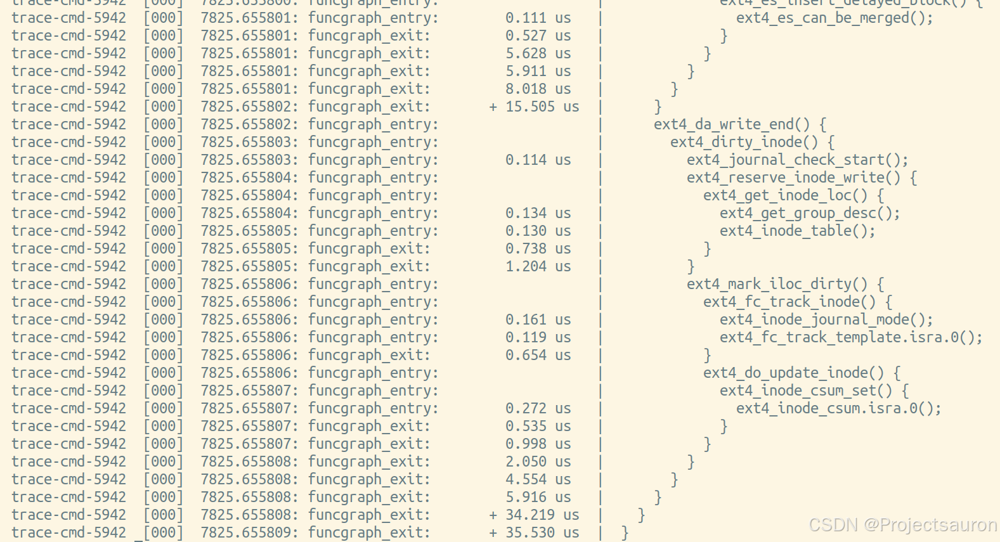
-l 和 -g 的区别也比较显而易见：
- -l 不会跟踪其内部的调用子函数;
- -g 会跟踪函数内部调用的子函数。
2.4 限制跟踪深度
默认情况下，trace-cmd 的 function_graph 会记录所有嵌套的函数调用。可以通过设置 --max-graph-depth 来限制跟踪深度。例如要将深度设置为 2，可以使用以下命令:
1 | |
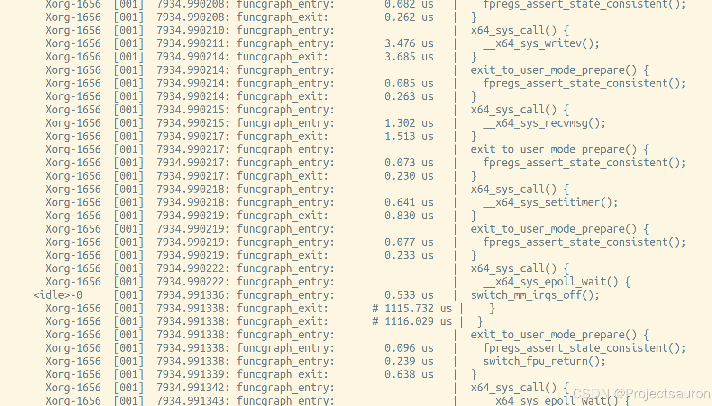
2.5 追踪特定事件
可以结合事件追踪 -e 来获取更详细的信息，比如 -es ched:sched_switch 将指定追踪调度切换事件。还可以使用正则表达式过滤，比如追踪 tcp 相关的事件：
1 | |
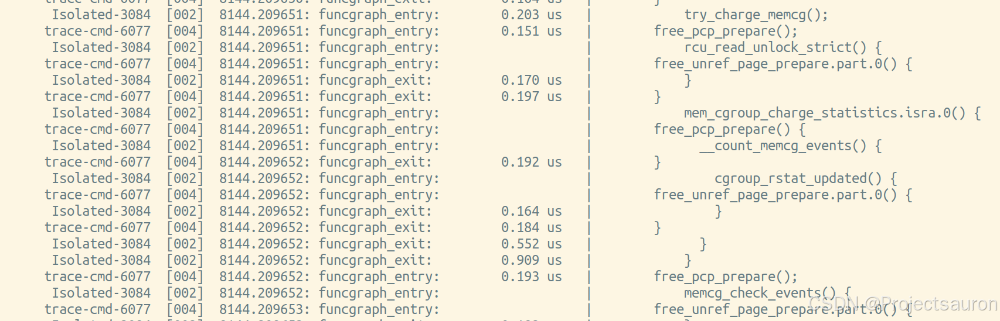
2.6 了解可被追踪的函数
如果你想只追踪某些函数而忽略其他的，你需要知道确切的函数名称。你可以用 list -f 参数来得到它们。例如搜索常见的内核函数 kmalloc，它被用来在内核中分配内存：
1 | |